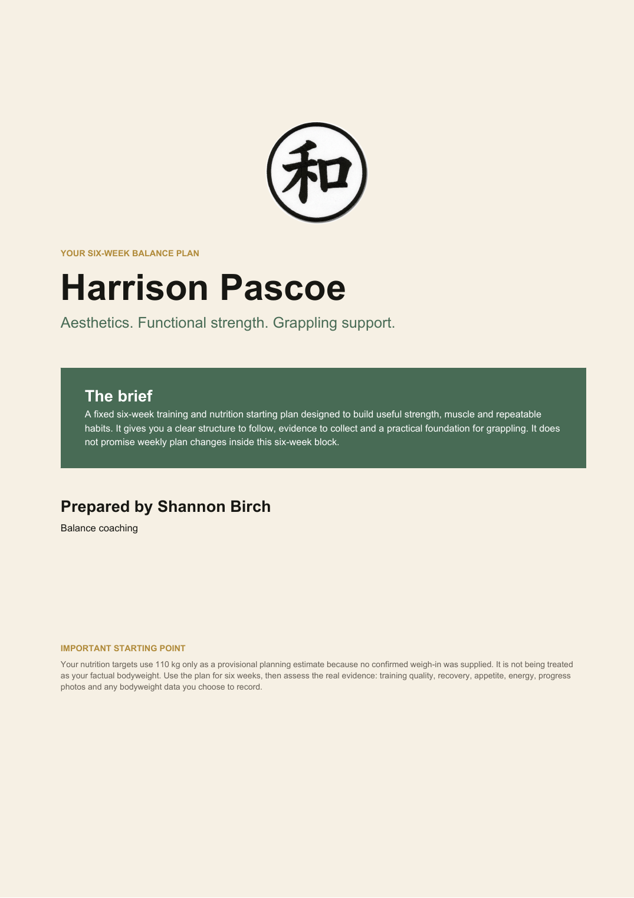
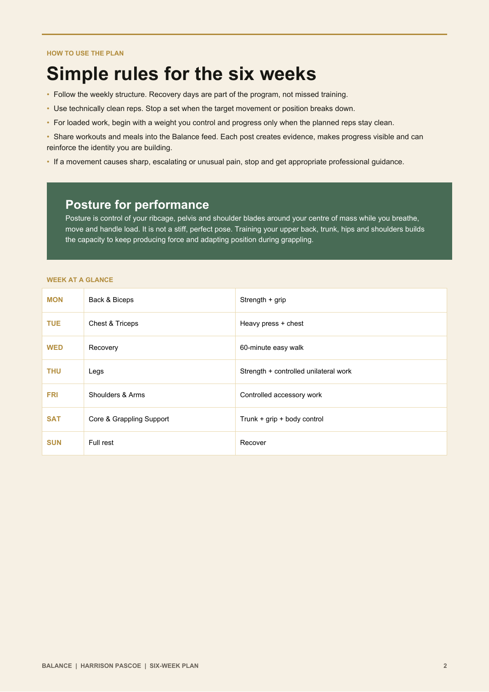
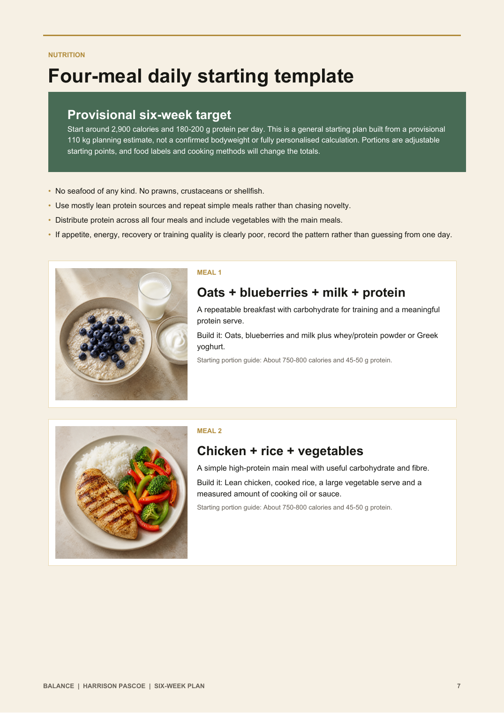
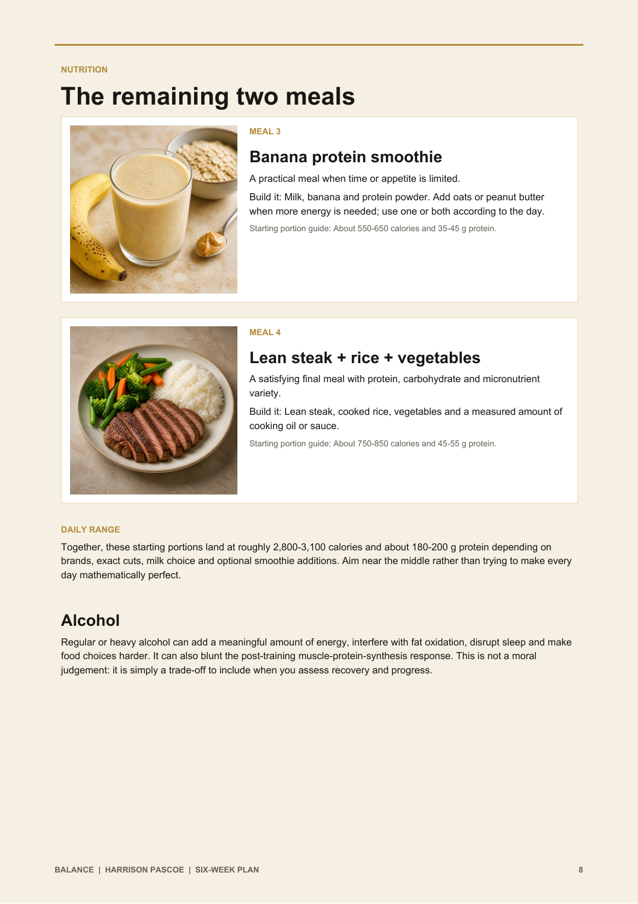
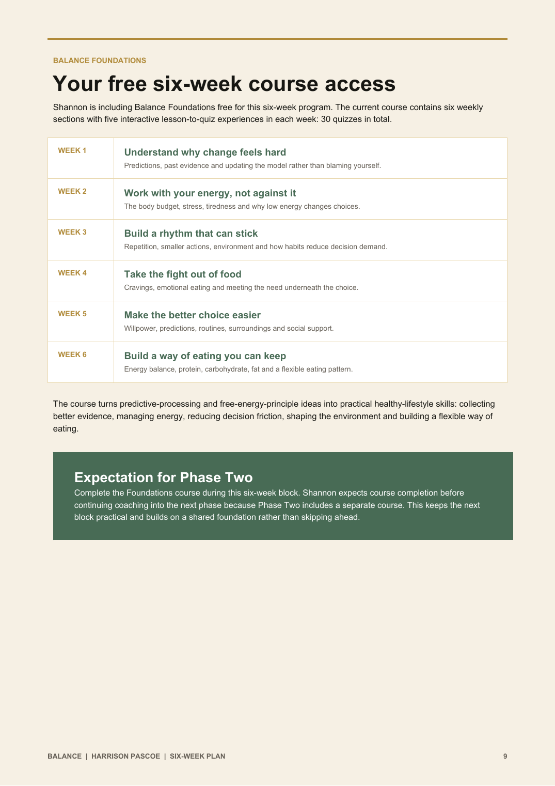
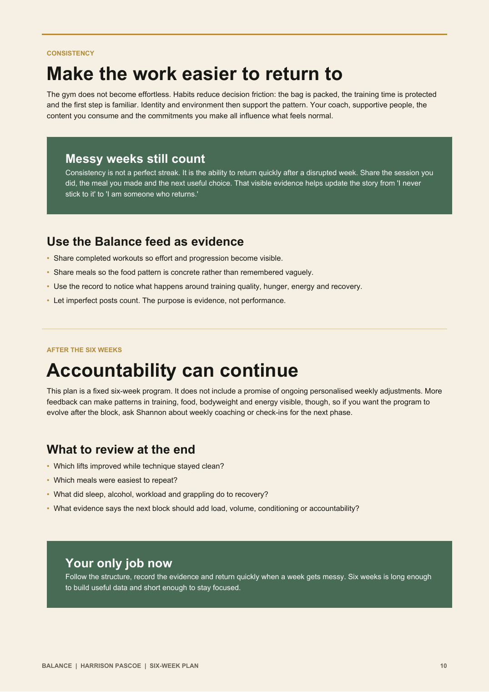
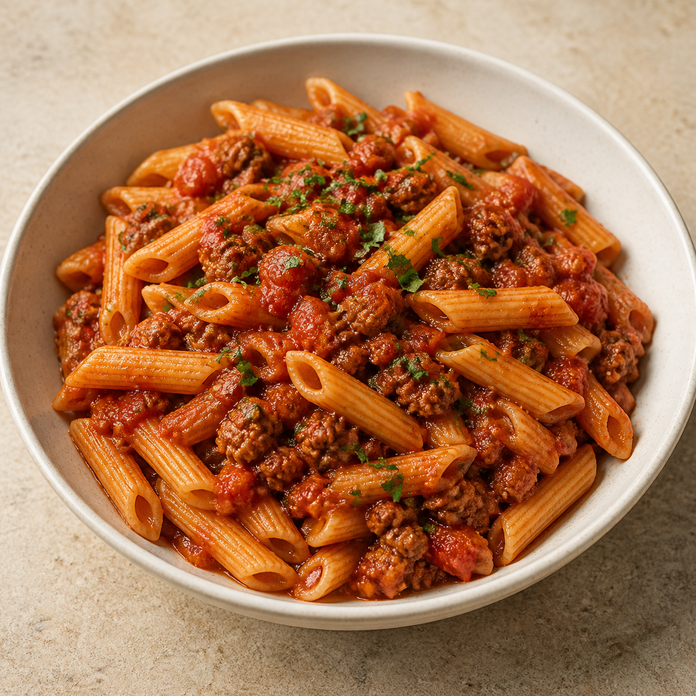

Progressing your lifts
Work inside the stated rep range with clean form. Add reps from session to session. When you reach the top of the range across all working sets, make a small weight increase and build the reps again. Retain the load or step it back if your form degrades.
Extra dinner option

High-protein pasta with lean beef mince
Serving: 125 g dry high-protein pasta, 200 g 5%-fat beef mince, 150 g tomato-based pasta sauce and 100 g vegetables.
Approximate macros: 800 calories, 60 g protein, 95 g carbohydrate and 18 g fat.